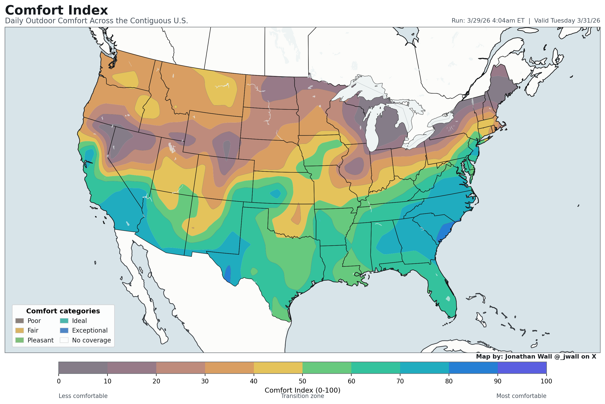
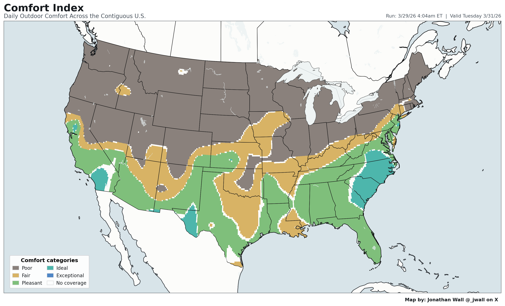

Comfort Index
Daily Maps for March 31, 2026
Public-facing stitched CONUS score and category maps for this forecast day.


City Rankings
Daily Comfort Index rankings for a curated set of major cities across the contiguous U.S.
Most Comfortable
- 1.Charleston, SC
- 2.Raleigh, NC
- 3.Charlotte, NC
- 4.San Diego, CA
- 5.Los Angeles, CA
- 6.Richmond, VA
- 7.Las Vegas, NV
- 8.Philadelphia, PA
- 9.Atlanta, GA
- 10.El Paso, TX
Least Comfortable
- 1.Detroit, MI
- 2.Milwaukee, WI
- 3.Chicago, IL
- 4.Cleveland, OH
- 5.Denver, CO
- 6.Salt Lake City, UT
- 7.Minneapolis, MN
- 8.Spokane, WA
- 9.Pittsburgh, PA
- 10.Seattle, WA